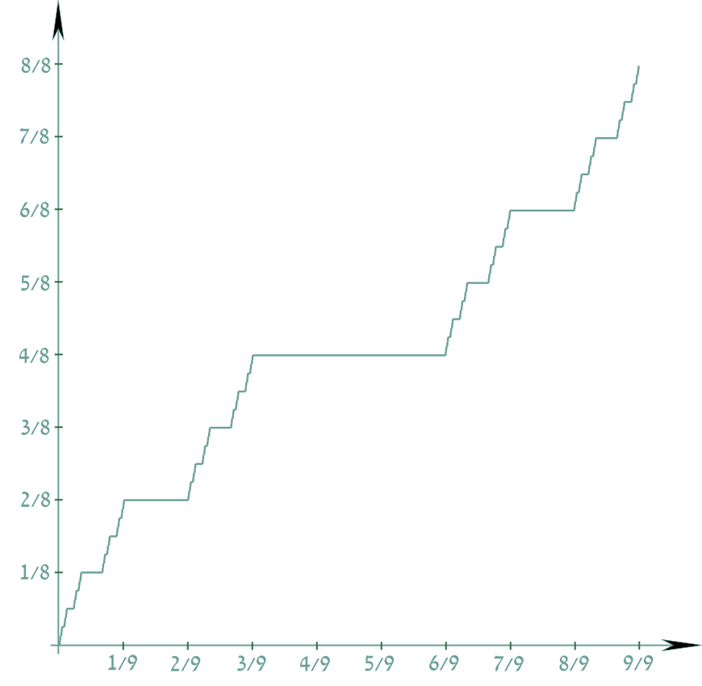

Следствие: (из задачи) \(A \in \mathfrak{M} \implies A = \left(\displaystyle\bigcap_{n = 1}^{\infty}G_{\frac1n}\right)\setminus E\), где \(\mu E = 0\).
Доказательство: \(\forall n \,\,\,\, \mu E \leqslant \mu(G_{\frac1n}\setminus A) < \frac1n\) и \(\forall n \,\,\,\, G_{\frac1n} \supset A \,\,\,\,\blacksquare\)
Замечание: Система множеств типа \(G_{\delta}\) имеет мощность континуум, так как \(A \in G_{\delta} \implies A = \displaystyle\bigcap_{n = 1}^{\infty}G_n = \displaystyle\bigcap_{n = 1}^{\infty}\cup_k (a_{nk}, b_{nk})\). То есть за счет множеств \(E\) меры ноль получаем \(2^c\) для можщности измеримых множеств.
Утверждение: Пусть \(A \in \mathfrak{M}\). Тогда \(\forall E \subset X\), где \(X\) – единица, имеем:
\[\mu^{*}E = \mu^{*}(E\setminus A) + \mu^{*}(E\cap A)\]
Доказательство: Долго, понятно \(\,\,\,\,\blacksquare\)
Определение: Пусть \(P_0\) стандартное Канторово множество. Тогда по предыдущим семинарам: \([0, 1] = P_0\sqcup \displaystyle\bigsqcup_{n = 0}^{\infty}\displaystyle\bigsqcup_{k = 1}^{2^{n - 1}}I^n_k\), где \(I^n_k\) интервалы.

Построим функцию на дополнении к \(P_0\): пусть \(f(0) = 0\) и \(f(1) = 1\).
\(f(x) = \frac{2k - 1}{2^{n + 1}}\) на \(I^n_k\).
Заметим, что на дополнении значение функции совпадает с \(\sup_{y < x}f(y)\), а на \(P_0\) возьмем значение супремума за определение функции. Получили неубывающую функцию на \([0, 1]\).
Эта функция называется функция Кантора.
Утверждение: Функция Кантора \(f\) непрерывна.
Доказательство: Пусть \(x_0\) точка разрыва. Имеем: \(f(x_0 - 0) < f(x_0 + 0)\) и на интервале \((f(x_0 - 0), f(x_0 + 0))\) нет значений функции \(f\) кроме быть может \(f(x_0)\), а значит \(\exists (\alpha, \beta) \in I: \,\,\,\, \forall x \in I \,\,\,\, f(x)\not\in (\alpha, \beta)\), что противоречит всюду плотности множества \(\{\frac{2k - 1}{2^{n + 1}}\} \,\,\,\,\blacksquare\)
\(f([0, 1]) = [0, 1]\) (так как принимает все промежуточные значения)
\(f([0, 1]\setminus P_0) = \{\frac{k}{2^n}\}\)
\(f(P_0) = [0, 1]\), так как значения \(\frac{2k - 1}{2^{n + 1}}\) принимаются в концах отрезков \(I^n_k\).
Задача: Построить строго возрастающую функцию \(g: [0, 1] \to [0, 1]\) с \(\mu g(P_0) > 0\).
Решение: Пусть \(g(x) = \frac{f(x) + x}2\), то есть наклоняем функцию Кантора на каждом интервале. \(\mu g(I^n_k) = \frac12\cdot m I^n_k\), так как это длина наклоненного образа. \(\mu g(P_0) = \frac12\).
Определение: Пусть \(M\) – сигма-алгебра с единицей \(X\), \(f: X \to \mathbb{R}\). \(f\) измерима, если \(\forall c \in \mathbb{R} \,\,\,\, f^{-1}((c, +\infty)) = \{x|\,\,\,\, f(x) > c\} \in M\).
(эквивалентное определение) \(\forall B \in \mathcal{B} \,\,\,\, f^{-1}(B) \in M\).
Утверждение: Пусть \(f(x) = \chi_E(x) = \begin{cases} 1, \,\,\,\, x\in E\\ 0, \,\,\,\, x\in X\setminus E \end{cases}\), \(E \subset X\). (характеристическая или индикаторная функция)
Тогда \(\chi_{E}(x)\) измерима \(\iff E \in M\).
Доказательство:
\[\chi_E^{-1} = \begin{cases} X, \,\,\,\, c < 0\\ E, \,\,\,\, 0 \leqslant c < 1\\ \varnothing, \,\,\,\, c \geqslant 1 \end{cases}\,\,\,\,\blacksquare\]
Утверждение: Непрерывная функция измерима относительно \(\mathfrak{M}\).
Доказательство: Воспользуемся эквивалентным определением. Будет доказано, что \(\mathcal{B} \subset \mathfrak{M}\), а для непрерывной функции прообраз открытого открыт \(\,\,\,\,\blacksquare\)
Утверждение: Функция Дирихле всюду разрывна и измерима.
Доказательство:
Индикаторная функция \(\mathbb{Q} \,\,\,\,\blacksquare\)
Определение: Функции \(f\) и \(g\) эквивалентно (измеримы), если \(\mu\{x: \,\,\,\, f(x)\ne g(x)\} = 0\).
Задача: Для классической меры ограниченное множество измеримо \(\iff\) \(\forall \varepsilon > 0 \,\,\,\, \exists\) открытое \(G_{\varepsilon} \supset A: \,\,\,\, \mu^{*}(G_{\varepsilon}\setminus A) < \varepsilon\).
Доказательство:
\(\boxed{\Longrightarrow} \,\,\,\, A \in \mathfrak{M}, \,\,\,\, A \subset (\alpha, \beta)\). \(\exists \displaystyle\bigcup_{n = 1}^{\infty}I_n, \,\,\,\, I_n\) – промежуток, такое, что \(\mu^{*}(A) \geqslant \mu^{*}(\displaystyle\bigcup_{n = 1}^{\infty}I_n) - \varepsilon\), далее можем сделать все промежутки интервалами, то есть сделать \(\displaystyle\bigcup_{n = 1}^{\infty}I_n = G_{\varepsilon}\) открытым. Имеем по критерию измеримости (см. задачу) \(\mu*(G_{\varepsilon}\setminus A) = \mu*(G_{\varepsilon}) - \mu*(G_{\varepsilon}\cap A) < \varepsilon\).
\(\boxed{\Longleftarrow} \,\,\,\, G = \displaystyle\bigcup_{n = 1}^{\infty}I_n\), где \(I_n\) – интервал. \(A\) – ограничено \(\implies \exists N: \displaystyle \sum_{n = N + 1}^{\infty}m I_n < \varepsilon\). Пусть \(B = \displaystyle\bigcup_{n = 1}^{N}I_n\)
Задача: Пусть \(m_{\varphi}\) правильная мера Стилтьеса. \(\mu_{\varphi}\) ее продолжение по Лебегу (Это мера Лебега-Стилтьеса). Найти \(\mu_{\varphi}((a, b))\), \(\mu_{\varphi}([a, b])\) и \(\mu_{\varphi}((a, b])\). Они измеримы, так как будут находится в порожденном кольце.
Доказательство:
\(\mu_{\varphi}([a, b]) = \displaystyle \lim_{n\to \infty}[a, b + \frac1n) = \varphi(b + 0) - \varphi(a)\) (следует из непрерывности снизу сигма-аддитивной меры). Далее \(\mu_{\varphi}(\{a\}) = \mu_{\varphi}([a, a]) = \varphi(a + 0) - \varphi(a) \,\,\,\,\blacksquare\)
Задача: Пусть \(mX < \infty, \,\,\,\, E \subset X\) и \(\mu^{*}E + \mu^{*}(X\setminus E) = mX\). Тогда \(E\) измеримо.
Доказательство: см. где-нибудь в Богачеве
Задача: Существует измеримое \(E \subset [0, 1]\), такое что \(\forall (a, b) \subset [0, 1] \,\,\,\, \mu((a, b)\setminus E) > 0\) и \(\mu((a, b)\cap E) > 0\).
Доказательство:
Затыкаем дырки в канторовом множестве канторовыми множествами.
Пусть \(F_0 = P_{\frac1{4}}\) – канторово множество меры \(\frac14\).
\([0, 1]\setminus F_0 = \bigcup_{k = 1}^{\infty}I_k^0 \,\,\,\, \displaystyle \sum_{k = 1}^{\infty}I_k^0 = \frac34\)
В каждый \(I^0_k\) поместим \(F^1_k\) – канторово множество меры \(\frac18\cdot \frac34 |I^0_k|\).
Задача: Следует ли измеримость \(f\) из того, что \(\forall c \,\,\,\, f^{-1}(\{c\}) \in M\)?
Доказательство: Нет, не следует.